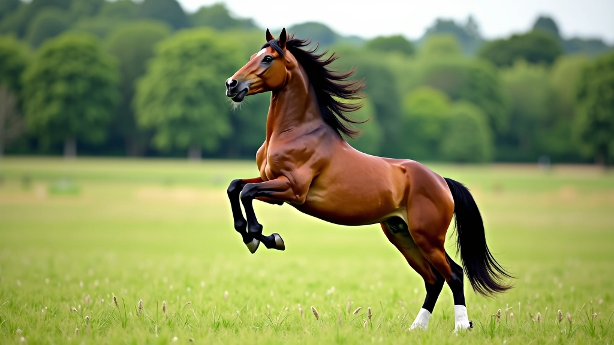
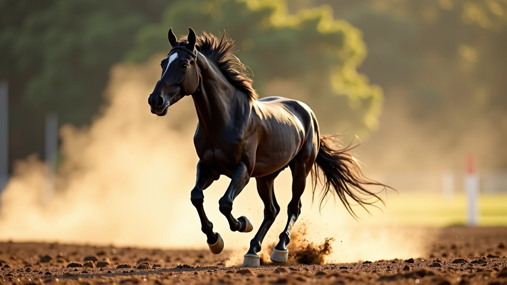
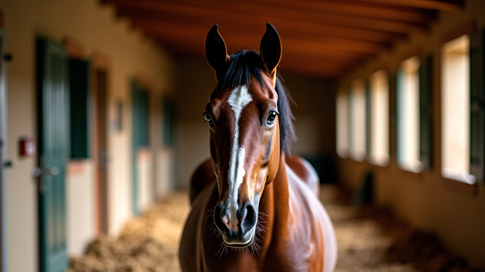

تقوية العضلات والأوتار بشكل صحيح
تمارين وطرق علمية لتقوية أرجل وجسم الحصان دون التسبب في إصابات. أساسيات التقوية السليمة التي تبني قوة حقيقية وتحافظ على صحة الحيوان.

لماذا تقوية العضلات والأوتار مهمة جداً؟
الحصان القوي ليس فقط الذي يركض بسرعة. إنه الحصان الذي يمكنه تحمل المسافات الطويلة دون إصابات. العضلات القوية والأوتار المرنة هي أساس أي برنامج تدريب ناجح. نحن نركز على بناء هذه القوة بطريقة آمنة وتدريجية.
لا نتحدث عن تمارين عشوائية. نحن نتحدث عن خطة منظمة تبدأ من الأساسيات وتصعد تدريجياً. هذا يعني أن حصانك سيكون أقوى وأكثر استقراراً، وأقل عرضة للإصابات أثناء السباقات الشاقة.

بناء الأساس: البداية الصحيحة
قبل أي شيء آخر، يجب أن يكون لديك فهم واضح لكيفية عمل عضلات الحصان وأوتاره.
فهم التشريح الأساسي
الحصان يملك حوالي 700 عضلة. معظمها في الأرجل والظهر. الأوتار تربط العضلات بالعظام. لا تملك الأوتار إمدادات دموية كثيفة، لذا تحتاج إلى وقت أطول للشفاء. هذا هو السبب في أن البناء التدريجي مهم جداً.
الراحة والاستشفاء
التمرين لا يبني العضلات. التمرين يكسرها. الراحة هي التي تبنيها. لهذا السبب، نوصي بيوم راحة كامل بعد كل جلسة تدريب شاقة. النوم الجيد والتغذية السليمة أساسية.
التدرج التدريجي
لا تقفز مباشرة إلى تمارين قاسية. ابدأ خفيفاً وأضف الحمل تدريجياً كل 2-3 أسابيع. هذا يعطي الأوتار وقتاً كافياً للتكيف. السرعة هي عدوك هنا.
ملاحظة مهمة
اختر برامج تدريب تناسب حالة حصانك الحالية والمرحلة التي يمر بها. افحص الحالة الصحية قبل البدء ببرنامج جديد. إذا لاحظت أي علامات عرج أو تورم، توقف فوراً واطلب استشارة بيطرية. هذا المحتوى إرشادي تعليمي وليس بديلاً عن استشارة المتخصصين.
تمارين تقوية فعالة وآمنة
هذه التمارين مجربة وموثوقة. لكن تذكر دائماً: ابدأ خفيفاً وتدرج ببطء.
التمرين الأول: المشي على التلال
المشي الصعودي يقوي عضلات الأرجل الخلفية والأوتار. ابدأ بتلة خفيفة لمدة 15 دقيقة، مرتين في الأسبوع. بعد 4 أسابيع، أضف 5 دقائق إضافية. بعد 8 أسابيع، يمكنك الانتقال إلى تلال أكثر حدة.
التمرين الثاني: التمرير البطيء
المشي السريع (ليس الركض الكامل) لمدة 20-30 دقيقة يبني القدرة الهوائية والعضلات. افعل هذا 3 مرات في الأسبوع. الحصان يجب أن يتنفس بصعوبة قليلة، لكن لا يجب أن يكون مرهقاً تماماً.
التمرين الثالث: تمارين المقاومة
استخدم عوائق منخفضة أو حقول رطبة قليلاً. الركض في أرض رطبة يزيد من المقاومة بنسبة 20-30% مقارنة بالأرض العادية. هذا يقوي الأوتار والأربطة بشكل طبيعي. ابدأ بـ 5 دقائق فقط مرة واحدة أسبوعياً.


الاستشفاء والعناية بالعضلات والأوتار
الاستشفاء ليس ترف. إنه جزء من البرنامج. بعد جلسة تدريب شاقة، تأكد من:
- التبريد التدريجي: لا تضع الحصان مباشرة في الحظيرة بعد الركض. اترك له 10-15 دقيقة مشي بطيء لتقليل ضربات القلب تدريجياً.
- الاستحمام البارد: ماء بارد (ليس جليد) يقلل الالتهاب. 5-10 دقائق كافية. تجنب الماء الساخن مباشرة بعد المجهود.
- التدليك البسيط: تدليك أرجل الحصان برفق يحسن الدورة الدموية. استخدم حركات دائرية ناعمة.
- الراحة الكاملة: يوم كامل بدون أي عمل بعد التدريبات الشاقة. اترك الحصان يرتاح في الحقل.
التغذية تحدد جودة العضلات والأوتار
البروتين
العضلات تُبنى من البروتين. تأكد من أن حصانك يحصل على كمية كافية من الحشائش عالية الجودة والشعير والذرة. 1.5 كيلوغرام من العلف المركز يومياً لحصان بوزن 500 كيلوغرام يكفي.
المعادن
الكالسيوم والفسفور والمغنيسيوم أساسية للعظام والأوتار. الحشائش المجففة الجيدة توفر معظم احتياجاتك. أضف ملح إضافي في أيام التدريب الشاقة.
الماء
ماء نظيف وفير دائماً. حصان في تدريب يحتاج إلى 50-60 لتر يومياً. في الأيام الحارة أو بعد التمرين، قد يحتاج إلى أكثر من ذلك.
جدول زمني للـ 12 أسبوع الأولى
هذا مثال على كيفية يمكن أن يكون البرنامج منظماً. كل حصان مختلف، فاضبط حسب حالتك.
المرحلة الأولى: التأسيس
مشي سهل 20-30 دقيقة يومياً. تمشية سريعة 15 دقيقة مرتين في الأسبوع. لا تفعل شيء قاسي. الهدف هو تعويد الجسم على العمل المنتظم.
المرحلة الثانية: الزيادة التدريجية
أضف مشي على التلال مرة واحدة في الأسبوع. أطول المشي السريع إلى 25-30 دقيقة. أضف يوماً واحداً من تمارين المقاومة البسيطة. يجب أن يشعر الحصان بتحسن ملحوظ الآن.
المرحلة الثالثة: التقوية
تلالان في الأسبوع. مشي سريع 3 أيام. يوم واحد من المقاومة المتوسطة. راقب الحصان عن كثب. إذا رأيت أي علامات إجهاد، أبطئ البرنامج.

فريق عين الخيل التحرير
فريق التحرير والمراجعة
كتبه فريق عين الخيل التحريري، متخصص في تقديم إرشادات عملية وسهلة المتابعة لمربي الخيل والفرسان.
مقالات ذات صلة

برنامج التدريب التدريجي لبناء التحمل
كيفية بناء قدرة التحمل بشكل آمن وفعّال على مدى عدة أسابيع. يبدأ من الأساسيات...

التغذية والترطيب قبل وأثناء السباق
ما يحتاجه الحصان من سوائل وغذاء لأداء أفضل. جداول تغذية مجربة من محترفين...

إدارة الإجهاد والتعافي بعد السباقات الطويلة
تقنيات التعافي السريع والفعّال بعد السباق الشاق. رعاية ما بعد المجهود...
هل لديك أسئلة عن التدريب؟
تواصل معنا مباشرة للحصول على مساعدة شخصية وإرشادات محددة لحصانك.
تواصل معنا الآن